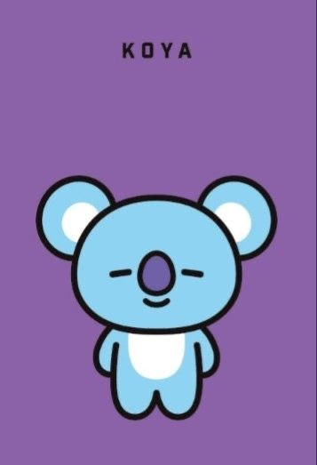
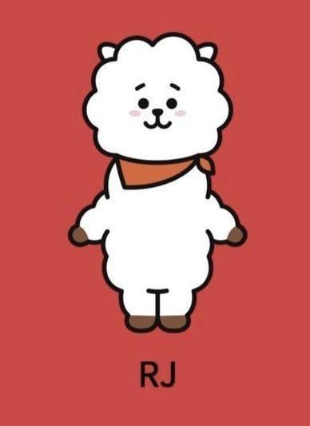
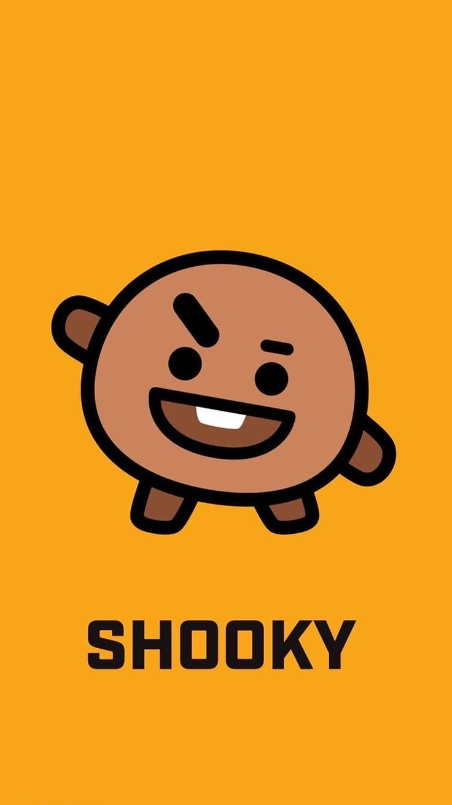
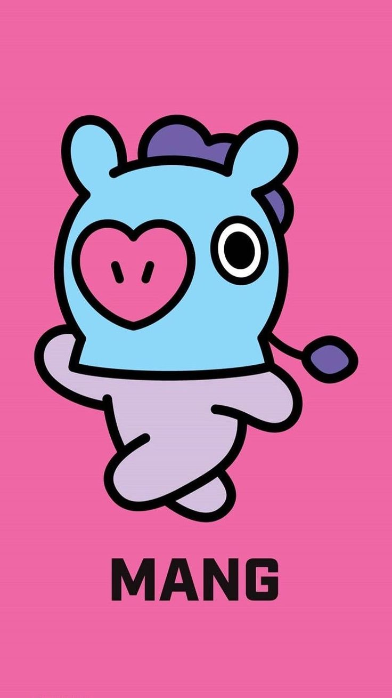
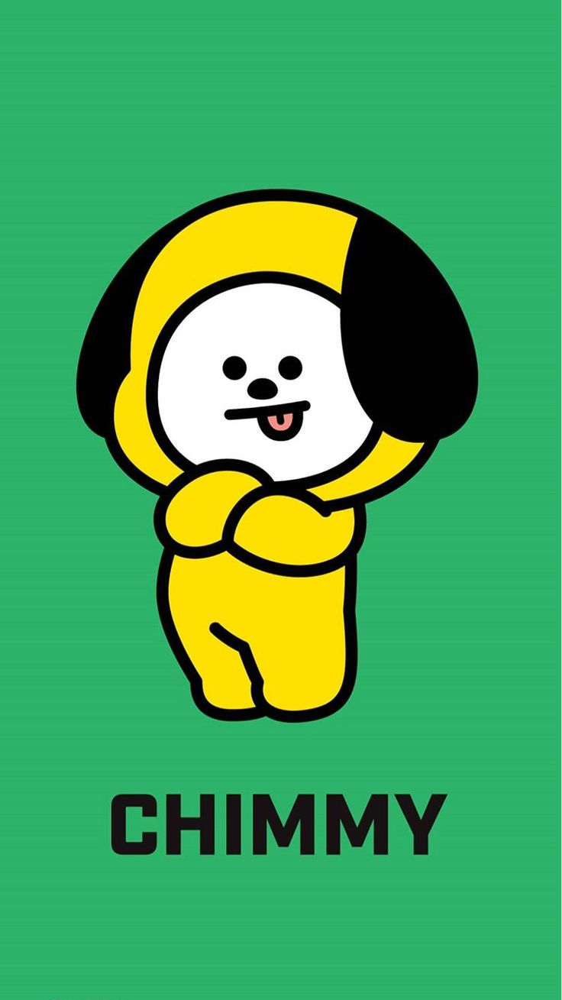
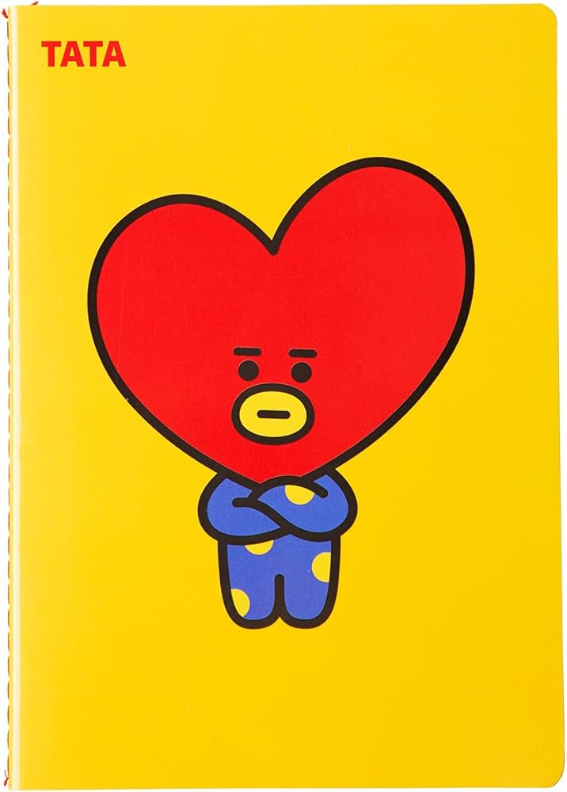
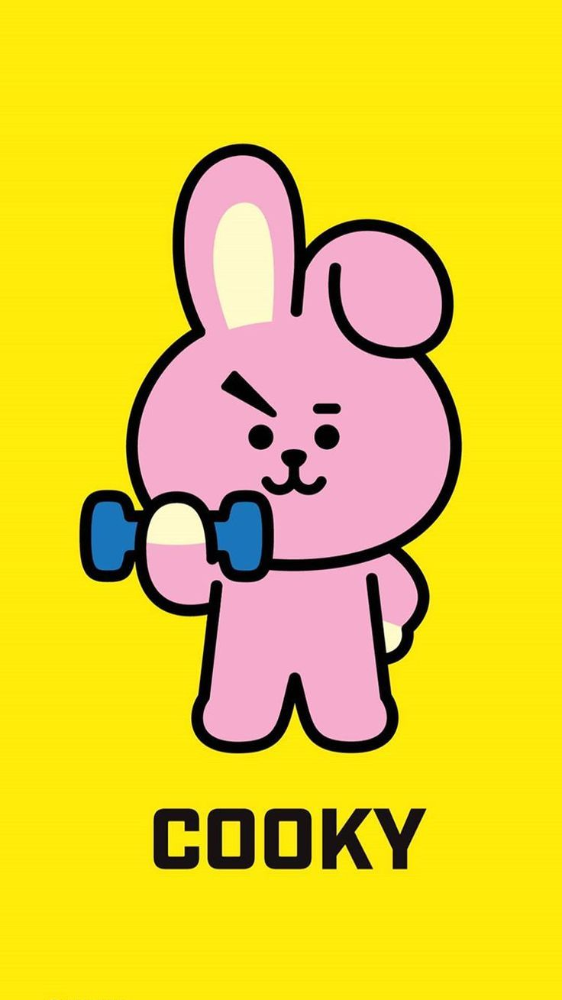

Curiosidades de Bangtan Sonyeondan (BTS)
El grupo Bangtan Sonyeondan esta conformado por 7 miembros :
Suga

El grupo Bangtan Sonyeondan esta conformado por 7 miembros :

Estos son algunos de las Curiosidades que te pueden servir para conocer mucho más a esta tan alegre agrupación
| Nombre | Posición en bts | Animal representativo | Color favorito | Mascota bt21 |
|---|---|---|---|---|
| Kim Namjoon (RM) | Líder/Rapero principal | Koala | Negro |  |
| Kim Seokjin (Jin) | Vocalista | Alpaca | Rosa |  |
| Min yoongi (Suga) | Rapero, Productor | Gato | Blanco |  |
| Jung Hoseok (J-Hope) | Bailarín principal, Rapero | Ardilla | Verde |  |
| Park Jimin (Jimin) | Bailarín principal, Vocalista | Perro | Azul |  |
| Kim Taehyung (V) | Vocalista, Visual | Tigre | Negro, verde |  |
| Jeon Jungkook (Jungkook) | Vocalista principal, Bailarín principal | Conejo | Rojo |  |